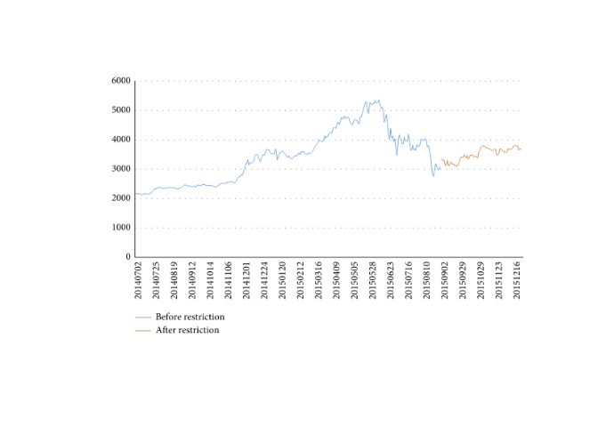
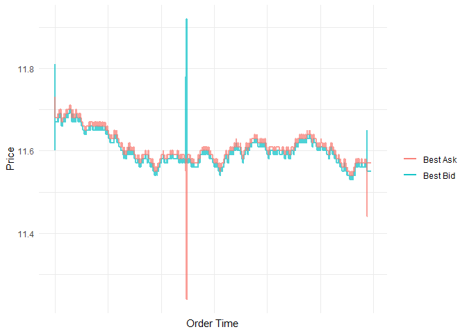
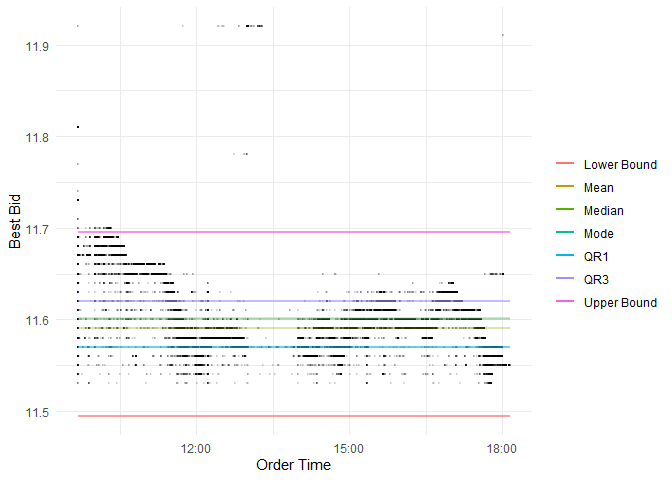
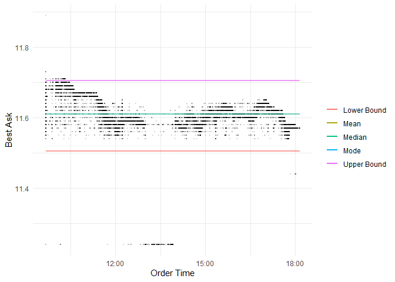

High Frequency Trading
Ugur Askar
Articles
High-Frequency Trading and Its Impact on Exogenous Liquidity Risk of China’s Stock Index Futures Market before and after Trading Restrictions
Publishers hypothesis was high-frequency trading creates liquidity risk which is even substantial as market risk. China tried to prevent liquidity risks by increasing transaction fee from 0.115‰ to 2.3‰. In below graph we can clearly see trading restriction policy had huge impact in stock market.

By using LvaR model we can see that trade restriction dropped liquidity risks from 16.89% to 4.04% which shows as HFT actually reduces liquidity risks.
High‑frequency trading: Order‑based innovation or manipulation?
High-frequency trading(HFT) is a financial innovation which was enabled by recent high performance computing, some of the transactions can be even made in microseconds. It shows consistent profit so It is used regularly, HFT made up 35% of equity trades in 2005 in the USA. Author states that it can be also manipulated by Order Based Manipulation(OBM). Some researchers claims that HFT reduces spread between bids and ask prices, provides significant liquidity, mitigates price volatility and improves market quality however author points out that these researchers use the data from US exchanges, not broker identifications. Author also points out that HFT actually takes liquidity when it’s most needed and provide liquidity when it’s not needed.
High-frequency trading statistics and analysis
Detecting outliers
Before we make any analysis about our dataset it is easier to look at the dataset with simple visualization and try to understand our dataset.
 Here we can clearly see that there are some outliers in this dataset which has lower best ask values than best bids if there is no error in the system we can take advantage of those values and buy and sell values immediately.
However it is not the only way to see the outliers, we can take lower bounds and upper bounds to see outliers more clearly.
QR1 = as.numeric(clean_df %>%
drop_na(Best_Bid) %>%
summarise(fivenum(Best_Bid)[2]))
QR3 = as.numeric(clean_df %>%
drop_na(Best_Bid) %>%
summarise(fivenum(Best_Bid)[4]))
lower_bound = as.numeric(clean_df %>%
drop_na(Best_Bid) %>%
summarise(fivenum(Best_Bid)[2] - 1.5*IQR(Best_Bid)))
upper_bound = as.numeric(clean_df %>%
drop_na(Best_Bid) %>%
summarise(fivenum(Best_Bid)[4] + 1.5*IQR(Best_Bid)))
Median = as.numeric(clean_df %>%
drop_na(Best_Bid) %>%
summarise(median(Best_Bid)))
average = as.numeric(clean_df %>%
drop_na(Best_Bid) %>%
summarise(mean(Best_Bid)))
mode = as.numeric(clean_df %>%
drop_na(Best_Bid) %>%
summarise(getmode(Best_Bid)))
clean_df %>%
transmute(Order_time, Best_Bid, lower_bound = lower_bound, upper_bound = upper_bound) %>%
filter(., Best_Bid != 0) %>%
ggplot(aes(x = Order_time)) +
geom_point(aes(y = Best_Bid), alpha = 0.1, size = 0.1) +
geom_line(aes(y= lower_bound, colour = 'Lower Bound'), alpha = 0.7, size = 1) +
geom_line(aes(y= upper_bound, colour = 'Upper Bound'), alpha = 0.7, size = 1) +
geom_line(aes(y= mean(Best_Bid), colour = 'Mean'), alpha = 0.3, size = 1) +
geom_line(aes(y= median(Best_Bid), colour = 'Median'), alpha = 0.3, size = 1) +
geom_line(aes(y= getmode(Best_Bid), colour = 'Mode'), alpha = 0.3, size = 1) +
geom_line(aes(y= getmode(QR1), colour = 'QR1'), alpha = 0.6, size = 1) +
geom_line(aes(y= getmode(QR3), colour = 'QR3'), alpha = 0.6, size = 1) +
labs(x = "Order Time", y = "Best Bid", color = "") +
theme_minimal()
## 25% of the values are below 11.57 (QR1)
## 25% of the values are between 11.57 (QR1) and 11.59 (Median/QR2)
## 25% of the values are between 11.59 (Median/QR2) and 11.62 (QR3)
## 25% of the values are above 11.62 (QR3)
## Lower Bound: 11.5 Upper Bound: 11.69 Mean: 11.04 Mode: 11.6QR1 = as.numeric(clean_df %>%
drop_na(Best_Ask) %>%
summarise(fivenum(Best_Ask)[2]))
QR3 = as.numeric(clean_df %>%
drop_na(Best_Ask) %>%
summarise(fivenum(Best_Ask)[4]))
lower_bound = as.numeric(clean_df %>%
drop_na(Best_Ask) %>%
summarise(fivenum(Best_Ask)[2] - 1.5*IQR(Best_Ask)))
upper_bound = as.numeric(clean_df %>%
drop_na(Best_Ask) %>%
summarise(fivenum(Best_Ask)[4] + 1.5*IQR(Best_Ask)))
Median = as.numeric(clean_df %>%
drop_na(Best_Ask) %>%
summarise(median(Best_Ask)))
average = as.numeric(clean_df %>%
drop_na(Best_Ask) %>%
summarise(mean(Best_Ask)))
mode = as.numeric(clean_df %>%
drop_na(Best_Ask) %>%
summarise(getmode(Best_Ask)))
clean_df %>%
transmute(Order_time, Best_Ask, lower_bound = lower_bound, upper_bound = upper_bound) %>%
filter(., Best_Ask != 0) %>%
ggplot(aes(x = Order_time)) +
geom_point(aes(y = Best_Ask), alpha = 0.1, size = 0.1) +
geom_line(aes(y= lower_bound, colour = 'Lower Bound'), alpha = 0.7, size = 1) +
geom_line(aes(y= upper_bound, colour = 'Upper Bound'), alpha = 0.7, size = 1) +
geom_line(aes(y= mean(Best_Ask), colour = 'Mean'), alpha = 0.3, size = 1) +
geom_line(aes(y= median(Best_Ask), colour = 'Median'), alpha = 0.3, size = 1) +
geom_line(aes(y= getmode(Best_Ask), colour = 'Mode'), alpha = 0.3, size = 1) +
labs(x = "Order Time", y = "Best Ask", color = "") +
theme_minimal()
## 25% of the values are below 11.58 (QR1)
## 25% of the values are between 11.58 (QR1) and 11.6 (Median/QR2)
## 25% of the values are between 11.6 (Median/QR2) and 11.63 (QR3)
## 25% of the values are above 11.63 (QR3)
## Lower Bound: 11.5 Upper Bound: 11.71 Mean: 11.18 Mode: 11.61Classification Tree
In below example we are going to create a classification tree with best_bid, best_ask, buy_sell and order_size variables our aim is to find a correlation between these variables and order actualization(whether order is successful or not).

| CP | nsplit | rel error | xerror | xstd |
|---|---|---|---|---|
| 0.0006895 | 0 | 1.0000000 | 1 | 0.0086599 |
| 0.0006000 | 7 | 0.9951734 | 1 | 0.0086599 |
Our CART model has 65.58% correct prediction rate.
Investing
In our investing plan we are going to use Lee and Ready trade algorithm which is published at 1991 for investing plan which calculates midpoint for ask and bid prices and compare it with order price to find if it’s suitable to buy the stock or not.
We are going to filter values where it is suitable for us and try to buy/sell stocks where we calculate profitable.
getTradeDirection_LR <- function(bid, ask, price) {
midpoint = (bid + ask)/2
rets = diff(price)
buys = nafill(c(TRUE, fifelse(test = rets > 0, yes = TRUE, no = fifelse(test = rets < 0, FALSE, NA))) * 2 -1, "locf")
buys = fifelse(price < midpoint, -1, fifelse(price > midpoint, 1, buys))
return(buys)
}
distinct_prices_LR_df = clean_df %>%
select(Order_time, BUY_SELL, Order_price, Best_Bid, Best_Ask, Order_size) %>%
na.omit(.) %>%
filter(., Best_Bid != 0, Best_Ask != 0, Order_size != 0, Order_price != 0) %>%
distinct(.) %>%
transmute(Order_time, BUY_SELL, Order_price, Best_Bid, Best_Ask, Order_size, Trade_Advice = fifelse(getTradeDirection_LR(Best_Bid, Best_Ask, Order_price) == 1,"BUY","SELL")) %>%
filter(BUY_SELL != Trade_Advice) %>%
filter(fifelse((Trade_Advice == "BUY" & Order_price == Best_Ask) | (Trade_Advice == "SELL" & Order_price == Best_Bid),1,0) == 1) %>%
mutate(Price_Volume = Order_price * Order_size)
money = 100000
stock_count = 0
for(i in 600:nrow(distinct_prices_LR_df)) {
buySell = toString(distinct_prices_LR_df[i,]$Trade_Advice)
price = as.numeric(distinct_prices_LR_df[i,]$Order_price)
orderSize = as.numeric(distinct_prices_LR_df[i,]$Order_size)
if(buySell == "BUY"){
for(j in orderSize){
if(price > money){
break
}
money = money - price
stock_count = stock_count+1
}
}
if(buySell == "SELL"){
for(j in orderSize){
if(stock_count == 0){
break
}
money = money + price
stock_count = stock_count-1
}
}
}
cat(paste(c('Our Money:',formatC(money, format="f", big.mark=",", digits=2), '\nOur stock count:', stock_count)))Our Money: 99,264.48 Our stock count: 58
Here we can see that our method failed to find best investing opportunities so we should try another method.
We are going to combine Kairi and MACD methods which focuses on basically moving averages and tries to find best opportunities from there.
MACD compares moving averages from 12 days and 26 days and decides whether to buy or sell, since we have only one day in our dataset we are going to make our scale smaller.
Kairi method which is created by Japanese investor compares moving maximum and moving minimum values with current midpoints and decides whether to buy or sell.
getTradeDirection_fib_df = clean_df %>%
select(Order_time, BUY_SELL, Order_price, Best_Bid, Best_Ask, Order_size) %>%
na.omit(.) %>%
mutate(midpoint = (Best_Bid + Best_Ask)/2, order_no=row_number()) %>%
filter(., Best_Bid != 0, Best_Ask != 0, Order_size != 0, Order_price != 0) %>%
mutate(previous_midpoint = lag(midpoint,1,order_by=order_no),
moving_average_midpoint = movavg(midpoint, n=9, type="s"),
MACD26 = movavg(midpoint, n=26, type="s"),
MACD12 = movavg(midpoint, n=12, type="s"),
minimum_midpoint = cummin(midpoint),
maximum_midpoint = cummax(midpoint)
) %>%
mutate(direction = case_when(previous_midpoint==midpoint ~ "SAME",
previous_midpoint>midpoint ~ "DOWN",
previous_midpoint==midpoint ~ "UP")
)%>%
mutate(trade_advice = case_when((Best_Bid>Best_Ask)&(Order_price==Best_Ask) ~ "BUY",
(Best_Bid>Best_Ask)&(Order_price==Best_Bid) ~ "SELL",
(midpoint==minimum_midpoint)&(BUY_SELL == "SELL") ~ "BUY",
(midpoint==maximum_midpoint)&(BUY_SELL == "BUY") ~ "SELL",
round(MACD26,2)!=round(MACD12,2) ~ "HOLD",
direction=="DOWN" ~ "SELL",
direction=="UP" ~ "BUY")
)%>%
filter(., trade_advice != "HOLD", trade_advice != BUY_SELL)
money = 100000
stock_count = 0
for(i in 1:nrow(getTradeDirection_fib_df)) {
buySell = toString(getTradeDirection_fib_df[i,]$trade_advice)
price = as.numeric(getTradeDirection_fib_df[i,]$Order_price)
orderSize = as.numeric(getTradeDirection_fib_df[i,]$Order_size)
if(buySell == "BUY"){
for(j in orderSize){
if(price > money){
break
}
money = money - price
stock_count = stock_count+1
}
}
if(buySell == "SELL"){
for(j in orderSize){
if(stock_count == 0){
break
}
money = money + price
stock_count = stock_count-1
}
}
}
cat(paste(c('Our Money:',formatC(money, format="f", big.mark=",", digits=2), '\nOur stock count:', stock_count,' with the average stock price: ', round(mean(getTradeDirection_fib_df$midpoint),2), '\nWe made ',round(money-100000+(mean(getTradeDirection_fib_df$midpoint)*stock_count),2),' profit')))Our Money: 76,172.89 Our stock count: 2055 with the average stock price: 11.6 We made 8.7 profit
Albeit our profit is small it is based on statistics and investing methodologies and we can consider that our model is successful.
Sources
https://www.hindawi.com/journals/complexity/2020/9192841/fig2/
https://ezproxy.mef.edu.tr:2067/content/pdf/10.1057/s41261-019-00115-y.pdf
https://onlinelibrary.wiley.com/doi/full/10.1111/j.1540-6261.1991.tb02683.x
https://www.investopedia.com/terms/m/macd.asp
https://www.investopedia.com/articles/forex/09/kairi-relative-strength-index.asp